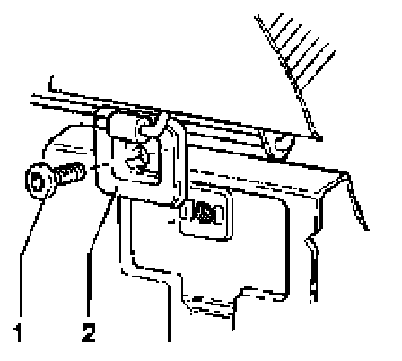

Seats, Rear Seat bench and back rest (split seat), removing
Seats, rear
Seat bench and back rest (split seat), removing
- Lift seat bench using pull loop.

- Remove socket-head bolts -1- and take out seat bench along with hinges -2-.
- Fold down both seat backs.

- Remove locks -1- from adapters -3- on seat back center bracket -2-.

- Press back latching hook -1- on left and/or right using screwdriver.
- Pull seat back -2- upward out of seat back bracket -3-.
- Pull seat back out of center bracket and remove from vehicle.